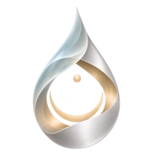
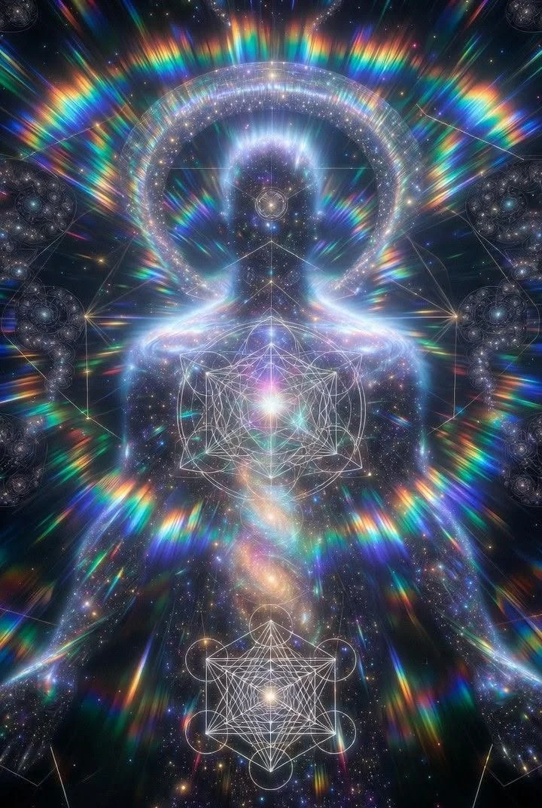

灵性 × 世界叙事
探索意识、灵魂与宇宙主题如何成为可体验的故事结构。

潼眼看LIGHT BEYOND THE VISIBLE面向灵性与艺术疗愈工作者的多维数字世界创作蓝图。
以意识、艺术与相遇，探索游戏的另一重维度。

BEYOND THE VISIBLE潼眼看的灵性世界网络游戏蓝图，面向灵性实践者、艺术家与疗愈创作者，描绘多维表达与共同创造的未来。
我们设想，声音可以成为场景，艺术可以成为路径，关于灵魂与宇宙的想象，可以获得可进入的空间。不同创作者在同一个世界中，延展各自的感知与语言。
这是品牌体系面向未来的一个方向：让线下相遇与数字体验产生连接，让个人创作走向更开放的共同构建。
如果一个世界，
由参与其中的灵魂共同创作，
它会拥有怎样的形态？
探索意识、灵魂与宇宙主题如何成为可体验的故事结构。
探索声音、视觉、文字与空间如何汇入共同创作。
关注AI、VR与交互媒介为数字世界提供的表达可能。
思考不同实践者如何在同一世界中贡献作品、经验与想象。
灵性世界 · 未来创作蓝图。敬请期待。
欢迎灵性与艺术疗愈创作者、游戏世界构建者，以及AI、VR和交互技术伙伴交流共创方向。
交流多维创作